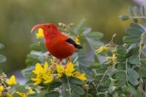
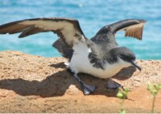
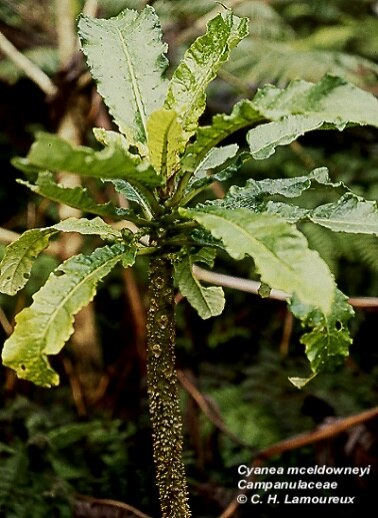
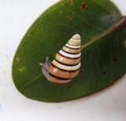
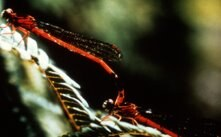

Taxonomic Groups
Seven expert Taxonomic Teams, plus the Hawaiian hoary bat, shaped a recovery strategy for every group of at-risk species. Choose a group to see its species, threats, recovery footprint and priority actions.

Expert-led footprintForest birds
Four at-risk forest birds survive only on East Maui, two facing imminent extinction; controlling mosquito-borne avian malaria is the top priority, followed by returning birds to West Maui and Molokaʻi.
Explore the strategy
Expert-led footprintSeabirds
Three listed seabirds nest across all four Maui Nui islands; none faces imminent extinction, and predator-proof fencing, predator control and safer infrastructure can bring them above 50 percent persistence with existing tools.
Explore the strategy Expert-led footprintWaterbirds
All five native waterbirds are listed and two are gone from Maui Nui; the plan builds on past success with wetland protection, predator fencing and control, and later reintroductions.
Explore the strategy
Algorithmic prioritizationPlants
The largest group, with 197 at-risk plants and 102 facing imminent extinction; emergency PEPP work, a 317-planning-unit recovery footprint prioritized with OptimTFE and refined by experts, and new tools against pests that cannot be controlled today.
Explore the strategy
Algorithmic prioritizationTerrestrial snails · kāhuli
All 49 at-risk snails could be lost within five years, so the plan's first goal is to prevent their extinction by keeping three populations of each species safe in 32 predator-proof kīpuka kāhuli and a Maui laboratory.
Explore the strategy Algorithmic prioritizationTerrestrial arthropods
Of 172 at-risk native arthropods, only 32 have enough data to map recovery habitat, so the plan pairs emergency protection for nine yellow-faced bees and habitat restoration with targeted surveys for the other 140.
Explore the strategy
Expert-led footprintAquatic invertebrates
Eleven at-risk damselflies, anchialine pool shrimp and freshwater snails depend on streams, wetlands and anchialine pools; the plan protects the last Maui Nui site of one damselfly and restores stream flows while keeping invasive species out.
Explore the strategy Plan strategyHawaiian hoary bat · ʻōpeʻapeʻa
Maui Nui's only native land mammal is endangered but not at imminent risk; the plan focuses on cutting wind-turbine deaths, protecting forests and wetlands in other groups' footprints, and learning how to measure bat trends.
Explore the strategyAll groups compared
At-risk species by taxonomic group, the number listed under state and federal endangered species laws, the number facing imminent extinction, and the primary threats and highest-priority actions identified in the plan (Executive Summary, Table 1).
| Group | At risk | Listed | Imminent extinction | Primary threats | Highest-priority actions |
|---|---|---|---|---|---|
| Forest birds | 4 | 3 | 2 | Introduced avian malaria transmitted by introduced Culex mosquitoes; Warming climate that lets mosquitoes and disease spread upslope; Invasive vertebrate predators (rats, cats and others) | S15 Future tools to address avian malaria; S14 Avian disease prevention (captive bird facilities, Wolbachia releases, broadcast BTI); S7 Invasive vertebrate predator control |
| Seabirds | 3 | 3 | 0 | Introduced mammalian predators, especially rats, mongoose and cats; Habitat loss; Artificial lights at night, power lines, wind turbines and roadways | S10 New predator-proof fencing; S7 Invasive vertebrate predator control; S17 Vertebrate health and rehabilitation |
| Waterbirds | 5 | 5 | 0 | Habitat loss from human modification of wetlands; Introduced mammalian predators (mongoose, cats, rats, domestic dogs); Hybridization of kōloa maoli with feral mallards | S10 New predator-proof fencing; S7 Invasive vertebrate predator control; S6 Wetland habitat management |
| Plants | 197 | 175 | 102 | Habitat loss; Invasive species (weeds, ungulates, rats); Invertebrate pests: slugs (101 species), black twig borer (21), ants (7), coconut rhinoceros beetle, naio thrips | Emergency PEPP actions for 102 species: survey, monitor, collect seeds and propagules, control local threats, propagate and outplant; S13 Future tools for rare plants and invertebrates; S3 Future ungulate fencing |
| Terrestrial snails | 49 | 3 | 49 | Rosy wolfsnail (Euglandina rosea) predation; Other introduced predators: rats, Jackson's chameleon, Oxychilus alliarius; No landscape-level control methods for these predators | Build the kīpuka kāhuli network of predator-proof exclosures (S10, new predator fencing); Establish an ex situ laboratory and captive rearing facility on Maui for all 49 species; Develop new tools, especially landscape-level control of Euglandina, chameleons and rats, and captive-rearing methods (S13) |
| Terrestrial arthropods | 172 | 8 | 9 | Habitat loss and ecosystem degradation; Predation by and competition with non-native ants and wasps; Decline of host plants | Emergency fencing and native habitat restoration at known sites of the nine imminent-extinction yellow-faced bees; Future tools for rare plants and invertebrates, including invertebrate propagation facilities (S13); Control invasive ants and yellow jackets (S8) |
| Aquatic invertebrates | 11 | 4 | 1 | Habitat loss, including reduced stream flows; Predation by aquatic invasive species (fish, frogs and shrimp); Feral pigs, ants and other non-native insects (Megalagrion nesiotes) | Protect the only known Maui Nui site of Megalagrion nesiotes from ungulates and invasive predators, and monitor it at least annually; Stream and wetland habitat management (S6): modify stream barriers and diversions in East Maui, and remove or keep out invasive species in lowland streams below 366 m (1,200 ft); Establish and maintain minimum instream flows without spreading invasive aquatic species |
| Hawaiian hoary bat | 1 | 1 | 0 | Collisions with wind turbines; Habitat loss; Possibly pesticide exposure and predation by invasive vertebrates (cats, rats) | Minimize and modify infrastructure, especially to reduce bat deaths at wind energy farms (S16); Stream and wetland habitat management (S6); Terrestrial habitat management (S5) |
| Total | 442 | 202 | 163 |